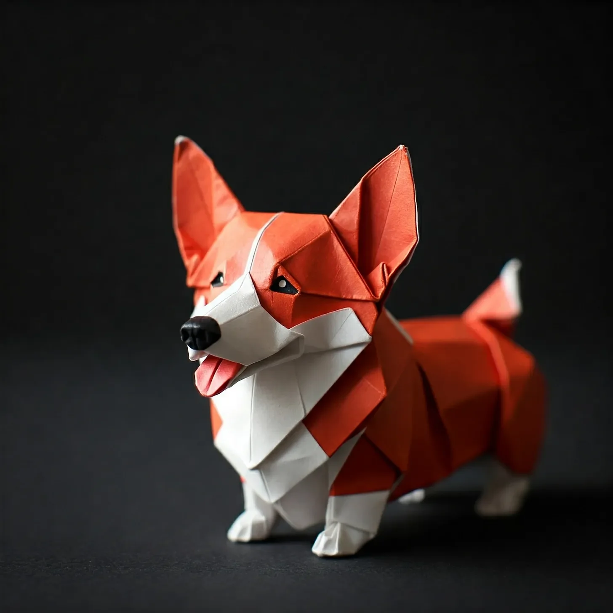

“짖을 것인가, 아니면 짖지 않을 것인가?” 나는 큰 소리로 중얼거렸고, 내 코기는 ‘그게 질문거리도 되나, 바보야'라고 외치는 듯한 표정으로 나를 쳐다보았다.
[“To bark, or not to bark?” I mused aloud, while my corgi stared at me with a look that screamed, 'That’s not even a question, you idiot.’]
비스킷, 내 다리 짧은 철학자 왕은 내 헛소리를 뜨거운 칼이 버터를 자르듯 빠르게 꿰뚫어 보는 방법을 가지고 있었다. 그의 호박색 눈은 천 개의 태양의 강렬함으로, 아니면 어쩌면 내 손에 있는 간식에 대한 불타는 욕망으로 나를 뚫어지게 쳐다보았다.
[Biscuit, my stumpy-legged philosopher king, had a way of cutting through my bullshit faster than a hot knife through butter. His amber eyes bore into me with the intensity of a thousand suns, or perhaps just the burning desire for the treat in my hand.]
“네 말이 맞아, 물론,” 나는 한숨을 쉬며 그에게 비스킷을 던졌다. “그건 잘못된 딜레마야. 짖는 것이 이진법적 선택은 아니지, 그렇지? 개의 의사소통에는 전체 스펙트럼이 있어.”
[“You’re right, of course,” I sighed, tossing him the biscuit. “It’s a false dilemma. Barking isn’t a binary choice, is it? There’s a whole spectrum of canine communication.”]
비스킷은 공중에서 만족스러운 바삭거리는 소리와 함께 간식을 받아먹었고, 그의 짧은 꼬리는 내가 동의로 해석하기로 선택한 방식으로 흔들렸다.
[Biscuit caught the treat mid-air with a satisfying crunch, his stub of a tail wagging in what I chose to interpret as agreement.]
나는 의자에 털썩 주저앉았고, 노트북의 빈 페이지는 그 깨끗한 공허함으로 나를 조롱하고 있었다. 커서는 리듬감 있게 깜빡거리며, 내 실패의 박자를 세는 디지털 메트로놈이 되었다. 이틀 후에 쇼가 있었지만, 내 자료는 누디스트의 옷장만큼이나 빈약했다.
[I slumped back in my chair, the blank page on my laptop mocking me with its pristine emptiness. The cursor blinked rhythmically, a digital metronome counting the beats of my failure. I had a show in two days, and my material was as sparse as a nudist’s wardrobe.]
“어떻게 생각해, 비스킷? 슈뢰딩거의 고양이에 대한 농담으로 시작하는 게 어때?” 나는 고양이 관련 유머가 그에게 민감한 주제라는 걸 잘 알면서도 물었다.
[“What do you think, Biscuit? Should I open with a joke about Schrödinger’s cat?” I asked, knowing full well that feline-based humor was a touchy subject for him.]
비스킷의 귀는 '고양이'라는 단어에 쫑긋 섰다가, 내가 경멸로밖에 해석할 수 없는 모습으로 납작해졌다. 그는 낮은 으르렁 소리를 냈는데, 나는 이를 “제발 좀, 데이브, 양자 물리학은 빼. 넌 코미디언이지 TED 강연자가 아니잖아."라고 번역했다.
[Biscuit’s ears perked up at the word 'cat,’ then flattened in what I could only assume was disdain. He let out a low growl, which I translated as, "For fuck’s sake, Dave, leave quantum physics out of this. You’re a comedian, not a TED Talk speaker.”]
나는 킥킥 웃으며 그의 귀 뒤를 긁어주려고 손을 뻗었다. “일리 있는 지적이야. 하지만 철학에는 코미디 소재가 풍부하다고. 데카르트에 대한 개그는 어때? '나는 생각한다, 고로 존재한다… 아마도 내가 가스레인지를 켜놓고 온 것 같아.’”
[I chuckled, reaching down to scratch behind his ears. “Fair point. But come on, there’s comedy gold in philosophy. What about a bit on Descartes? 'I think, therefore I am… pretty sure I left the stove on.’”]
비스킷은 고개를 기울였고, 그의 표정은 동정심과 대리 부끄러움이 뒤섞인 것 같았다. 만약 개가 얼굴을 손바닥으로 칠 수 있다면, 그는 지금 바로 그렇게 하고 있을 것이다.
[Biscuit tilted his head, his expression a mixture of pity and secondhand embarrassment. If dogs could facepalm, he’d be doing it right now.]
“힘든 관객이군,” 나는 중얼거리며 노트북으로 다시 돌아섰다. 커서는 계속해서 미치게 하는 춤을 추며 매 깜빡임마다 나를 조롱했다. 나는 이 코미디-철학 콤보를 수년간 해왔지만, 최근에는 그저 같은 오래된 소재를 재탕하는 것 같은 느낌이 들었다. 플라톤의 동굴, 오컴의 면도날, 파블로프의 개 - 나는 이 철학적 젖소들을 말라붙을 때까지 짜냈다.
[“Tough crowd,” I muttered, turning back to my laptop. The cursor continued its maddening dance, taunting me with each blink. I’d been doing this comedy-philosophy schtick for years, but lately, it felt like I was just rehashing the same old material. Plato’s cave, Occam’s razor, Pavlov’s dog – I’d milked these philosophical cows dry.]
비스킷은 내 고민을 감지하고(아니면 어쩌면 그저 또 다른 간식을 바라면서), 살금살금 다가와 턱을 내 무릎에 올려놓았다. 그의 눈, 개의 지혜로 가득 찬 따뜻한 웅덩이 같은 눈이 나를 올려다보았다.
[Biscuit, sensing my distress (or perhaps just hoping for another treat), padded over and rested his chin on my knee. His eyes, warm pools of canine wisdom, gazed up at me.]
“비결이 뭐야, 친구?” 나는 무의식적으로 그의 머리를 쓰다듬으며 물었다. “어떻게 그렇게… 현재에 충실할 수 있어? 그렇게 순간에 몰입할 수 있는 거야?”
[“What’s the secret, buddy?” I asked, absently stroking his head. “How do you stay so… present? So in the moment?”]
마치 대답이라도 하듯, 비스킷의 귀가 갑자기 쫑긋 섰다. 그는 창문으로 달려가 우리 마당에 감히 존재하는 다람쥐를 향해 격렬하게 짖어댔다.
[As if in response, Biscuit’s ears suddenly pricked up. He bolted to the window, barking furiously at a squirrel that dared to exist in our yard.]
그리고 바로 그 순간, 나는 깨달았다. 유레카의 순간. 코미디적 깨달음.
[And just like that, it hit me. The eureka moment. The comedic epiphany.]
“세상에, 비스킷!” 나는 손가락으로 키보드를 빠르게 두드리며 외쳤다. “넌 천재야!”
[“Holy shit, Biscuit!” I exclaimed, fingers flying across the keyboard. “You’re a genius!”]
그 후 한 시간 동안, 나는 내 뮤즈에게 간식을 던져주는 것 외에는 쉬지 않고 열심히 타이핑했다. 비스킷은 낮잠을 자다가 적절한 타이밍의 콧방귀와 꼬리 흔들기 형태로 비평을 제공하는 것을 번갈아 했다.
[For the next hour, I typed furiously, pausing only to throw treats to my muse. Biscuit alternated between napping and offering critical feedback in the form of well-timed snorts and tail wags.]
내가 끝냈을 때쯤, 나는 신선하고 진정성 있으며, 감히 말하자면 - 재미있는 새로운 세트를 가지게 되었다. 그것은 개의 단순하고 기쁨 가득한 삶의 렌즈를 통해 본 인간 존재의 부조리함에 관한 것이었다.
[By the time I finished, I had a new set that felt fresh, authentic, and dare I say it – funny. It was all about the absurdity of human existence, viewed through the lens of a dog’s simple, joy-filled life.]
이틀 후 밤, 나는 코미디 클럽의 무대 뒤에 서 있었고, 내 심장은 에스프레소를 마신 착암기처럼 쿵쾅거렸다. 사회자의 목소리가 스피커를 통해 울려 퍼졌다: “신사 숙녀 여러분, 무대에 오르는 데이브 '디오게네스’ 도슨을 환영해 주세요!”
[Two nights later, I stood backstage at the comedy club, heart pounding like a jackhammer on espresso. The emcee’s voice boomed through the speakers: “Ladies and gentlemen, please welcome to the stage… Dave 'The Diogenes’ Dawson!”]
내가 조명 아래로 걸어 나갈 때, 나는 머릿속에서 비스킷의 격려하는 짖음(아니면 경고하는 으르렁거림이었을까?)을 거의 들을 수 있을 것 같았다.
[As I stepped into the spotlight, I could almost hear Biscuit’s encouraging bark (or was it a warning growl?) in my head.]
“안녕하세요, 여러분,” 나는 손바닥에 땀이 배어나왔지만 목소리는 안정적으로 시작했다. “최근에 존재에 대해 많이 생각해 봤어요. 무거운 주제죠, 알아요. 하지만 잠깐만 참아주세요 - 이 실존적 황야를 안내해줄 철학적 셰르파가 있거든요. 그의 이름은 비스킷, 코기 종이고, 최고의 삶을 사는 법에 대한 박사 학위를 가지고 있죠.”
[“Good evening, folks,” I began, my palms sweaty but my voice steady. “I’ve been thinking a lot about existence lately. Heavy stuff, I know. But bear with me – I’ve got a philosophical sherpa to guide us through this existential wilderness. His name is Biscuit, he’s a corgi, and he’s got a Ph.D. in Living Your Best Life.”]
관객들이 킥킥거렸고, 나는 어깨의 긴장이 조금 풀리는 것을 느꼈다.
[The audience chuckled, and I felt the tension in my shoulders ease a bit.]
“자, 비스킷은 사르트르의 '타인은 지옥이다'라는 주장에 대해 강한 의견을 가지고 있어요. 그에 따르면, 지옥은 사실 진공청소기고, 천국은 확실히 다른 사람들이래요 - 특히 간식을 가진 사람들이요.”
[“Now, Biscuit’s got some strong opinions on Sartre’s claim that 'hell is other people.’ According to him, hell is actually the vacuum cleaner, but heaven is definitely other people – especially the ones with treats.”]
내가 공연을 시작하자, 방 안의 에너지가 변하는 것을 느낄 수 있었다. 웃음소리는 더 따뜻해지고 진실해졌다. 나는 니체의 영원회귀(“내가 이 순간을 영원히 다시 살아야 한다면, 비스킷이 내 서명본 '존재와 무'를 먹는 걸 발견한 그 순간이 아니길 바라요”)부터 칸트의 정언명령(“비스킷은 모든 나무에 오줌 누는 것이 보편적 도덕적 의무라고 믿어요”)까지 모든 것에 대해 즉흥적으로 이야기했다.
[As I launched into my set, I could feel the energy in the room shift. The laughter grew warmer, more genuine. I riffed on everything from Nietzsche’s eternal recurrence (“If I have to relive this moment for eternity, I hope it’s not the one where I caught Biscuit eating my signed copy of 'Being and Nothingness’”) to Kant’s categorical imperative (“Biscuit believes that peeing on every tree is a universal moral duty”).]
하지만 진짜 뜻밖의 결말은 내 공연 끝 무렵에 왔다.
[But the real kicker came towards the end of my set.]
“아시다시피, 우리 인간들은 삶의 의미, 현실의 본질, 우리가 진정성 있게 살고 있는지에 대해 걱정하느라 많은 시간을 보내죠,” 나는 좀 더 성찰적인 어조로 말했다. “하지만 비스킷은? 비스킷은 그런 것들에 대해 전혀 신경 쓰지 않아요. 그는 그저 존재하는 데 너무 바쁘거든요.”
[“You know, we humans spend so much time worrying about the meaning of life, the nature of reality, whether we’re living authentically,” I said, my voice taking on a more reflective tone. “But Biscuit? Biscuit doesn’t give a shit about any of that. He’s too busy being.”]
나는 잠시 말을 멈추고 그 말들이 가라앉기를 기다렸다.
[I paused, letting the words sink in.]
“우리 마당에 다람쥐가 나타나면, 비스킷은 그걸 쫓는 게 자신의 가치관과 일치하는지 아니면 시간을 생산적으로 쓰는 건지 고민하지 않아요. 그는 다람쥐가 자신의 상상의 산물인지, 자유의지가 환상인지 궁금해하지 않죠. 그는 그저… 그 빌어먹을 다람쥐를 쫓아요.”
[“When a squirrel shows up in our yard, Biscuit doesn’t question whether chasing it aligns with his values or if it’s a productive use of his time. He doesn’t wonder if the squirrel is a figment of his imagination or if free will is an illusion. He just… chases the damn squirrel.”]
관객들은 이제 조용히 모든 말에 귀를 기울이고 있었다.
[The audience was silent now, hanging on every word.]
“그리고 아세요 뭔지? 그 순수하고 순수한 다람쥐 쫓기의 기쁨의 순간에, 비스킷은 지금까지 살았던 어떤 자기 성찰적인 철학자보다 더 살아있고, 더 현재에 충실하며, 더 '진정성’ 있어요.”
[“And you know what? In that moment of pure, unadulterated squirrel-chasing joy, Biscuit is more alive, more present, more 'authentic’ than any navel-gazing philosopher who ever lived.”]
나는 깊이 숨을 들이쉬며 침묵의 무게를 느꼈다.
[I took a deep breath, feeling the weight of the silence.]
“그러니 어쩌면, 정말 어쩌면, 인생의 비밀은 먼지 쌓인 오래된 책이나 고상한 철학 논문에 있는 게 아닐지도 몰라요. 어쩌면 그것은 공 던지기 게임, 배 긁기, 또는 인생이 던져주는 어떤 다람쥐 쫓기 순간에 완전히 몰입하는 단순한 행위에 있을지도 모르죠.”
[“So maybe, just maybe, the secret to life isn’t found in dusty old books or lofty philosophical treatises. Maybe it’s in a game of fetch, a belly rub, or the simple act of being fully present in whatever squirrel-chasing moment life throws at you.”]
내가 마지막 대사를 전하자, 방안은 박수와 웃음소리로 가득 찼다. 나는 고개를 숙여 인사했고, 내 마음은 비스킷이 자신의 꼬리를 잡을 때마다 느꼈을 법한 그런 종류의 기쁨으로 날아오르는 것 같았다.
[As I delivered my closing line, the room erupted in applause and laughter. I bowed, my heart soaring with the kind of joy that I imagined Biscuit felt every time he caught his tail.]
그날 밤 늦게, 내가 비스킷에게 공연에 대해 이야기하는 동안 (그는 내가 열렬한 관심으로 해석하기로 선택한 태도로 듣고 있었다), 나는 깊은 깨달음을 얻었다. 내 개에게 철학을 가르치려고 노력하는 과정에서, 그가 나에게 훨씬 더 가치 있는 것 - 삶을 사는 기술을 가르쳐 주었던 것이다.
[Later that night, as I recounted the show to Biscuit (who listened with what I chose to interpret as rapt attention), I realized something profound. In trying to teach my dog about philosophy, he had taught me something far more valuable – the art of living.]
나는 내 털복숭이 소크라테스에 대한 애정이 솟구치는 것을 느끼며 그의 귀 뒤를 긁어주었다. “있잖아, 비스킷,” 나는 부드럽게 말했다, “넌 내가 만난 철학자 중 가장 현명한 것 같아.”
[I scratched behind his ears, feeling a surge of affection for my furry Socrates. “You know, Biscuit,” I said softly, “I think you might be the wisest philosopher I’ve ever met.”]
비스킷은 자신의 엉덩이를 핥는 것으로 대답했다.
[Biscuit responded by licking his own butt.]
그리고 정말, 인간의 조건에 대해 이보다 더 심오한 진술을 누가 요구할 수 있을까.
[And really, what more profound statement on the human condition could one ask for?]